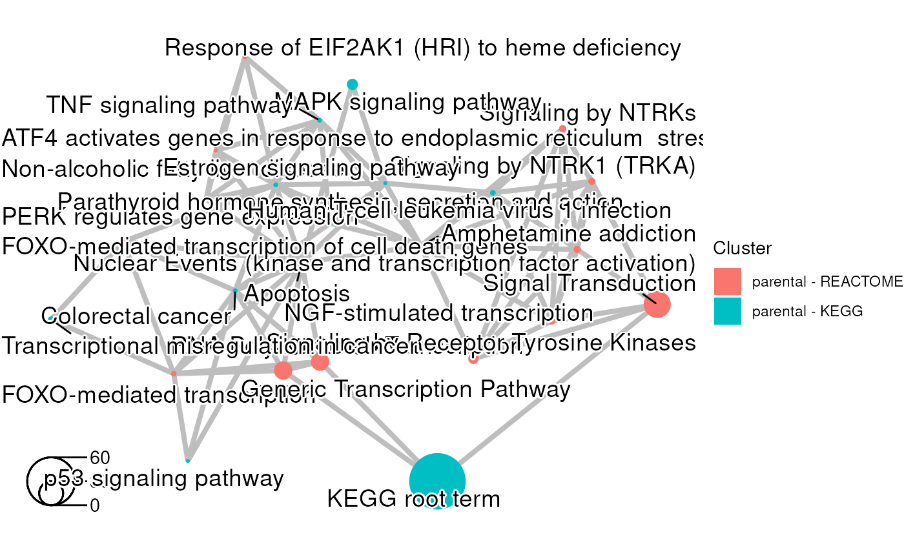

The function creates a basic enrichment map using functional enrichment results.
Usage
createMultiEmap(
gostResultsList,
queryList,
showCategory,
categoryLabel,
categoryNode,
line,
...
)Arguments
- gostResultsList
a
listofdata.framecontaining the enrichment results to be plot with different group identification.- queryList
a
listofcharacterstring representing the name of query retained for each enrichment results present in thegostResultsListparameter. The query should be present in its associated enrichment results.- showCategory
a positive
integeror avectorofcharactersrepresenting terms. If ainteger, the firstnterms will be displayed. Ifvectorof terms, the selected terms will be displayed.- categoryLabel
a positive
numericrepresenting the amount by which plotting category nodes label size should be scaled relative to the default (1).- categoryNode
a positive
numericrepresenting the amount by which plotting category nodes should be scaled relative to the default (1).- line
a non-negative
numericrepresenting the scale of line width.- ...
additional arguments that will be pass to the
emapplotfunction.
Value
a ggplot object representing the enrichment map with
different colors for each group of enrichment results.
Examples
## Load the result of an enrichment analysis done with gprofiler2
data(parentalNapaVsDMSOEnrichment)
## Only retain the results section
gostResults <- as.data.frame(parentalNapaVsDMSOEnrichment$result)
## Limit the results subsection of REACTOME and KEGG
gostResultsREAC <- gostResults[which(gostResults$source == "REAC"),]
gostResultsREAC <- gostResultsREAC[1:13, ]
gostResultsKEGG <- gostResults[which(gostResults$source == "KEGG"),]
## Extract meta data information
queryList <- list("parental - REACTOME", "parental - KEGG")
## Create basic enrichment map using Wikipathways terms
enrichViewNet:::createMultiEmap(gostResultsList=list(gostResultsREAC,
gostResultsKEGG), queryList=queryList, showCategory=30L,
categoryLabel=1, categoryNode=1, line=1.4)
#> Coordinate system already present.
#> ℹ Adding new coordinate system, which will replace the existing one.
